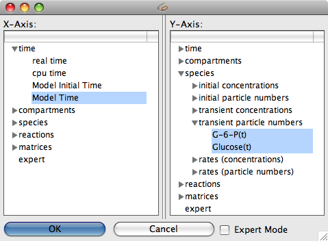
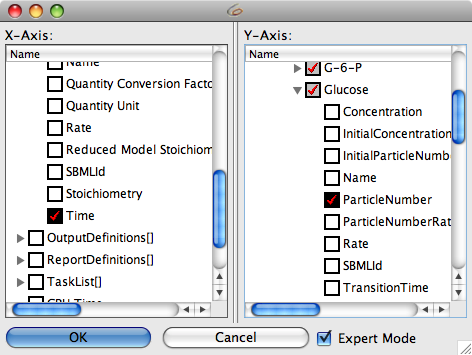

Plotting is another form of output that COPASI can do. Most of the time, you probably want to plot some or all of the species concentrations during a time course simulation and, as described above, this is easiest done by choosing that predefined plot template from the
Output Assistant. But since the output assistant can not cover all possible plots sometimes you will have to define your own plots.
Currently, COPASI only supports two dimensional plotting. To define a plot, you open the plot definition dialog by selecting the Output->Plots branch in the object tree. A plot in COPASI is made up of a number of curve or histogram objects. In order to add a new curve object you click on the New curve... button.
A selection dialog similar to the one described for the
creation of reports will appear. The major difference is that you now have two tree views side by side instead of only one. The left tree is a single selection dialog that lets you specify the object to be drawn along the x-axis. For a plot of concentration against time this would be the simulation time. The right tree is, again, a multi-selection tree that lets you specify what would be drawn along the y-axis. In case of plotting concentrations against time, this would be one or more concentrations of species. Just as described for the report definitions, you can switch between a simple tree and the full tree, but for most plots the simple tree will be enough.
|  |
| Selection Dialog with some Items selected |
|  |
| Expert Selection Dialog for Curve Objects |
Once you have finished your selection, you click on the OK button which will take you back to the curve definition dialog. For each object selected in the right tree, you will now see one tab which represent the corresponding curve object for the plot. To remove one of the curves, select the tab that corresponds to the curve you want to remove and then click on the Delete curve button. The next time you do a
time course simulation, each plot that is marked as active will be plotted automatically. How you define a plot as being active will be explained below.
Each curve object has a title, and the information what will be drawn on the x- and y-axis. Additionally you can specify whether the curve should be drawn as a line, as points or as symbols. This has to be specified for each curve separately. You can also specify if the plot should be drawn with a logarithmic scale for one or both of the axis.
In the plot definition dialog, in addition to adding and removing curve objects, you can give a name for the plot definition and specify whether the plot should be active or not with the active check box. (Only plots that are active are drawn when a
time course simulation is run!)
Another way to specify whether a plot is active or not is in the plot table where all the plots are listed. Each row in the table contains a column named active that contains a check box with which you can toggle the state of a plot. If you changed the state of one or more plots, you have to commit these changes either by clicking the Commit button or any other action that is equivalent to pressing the Commit button (see
compartments section).
In addition to curves, you can also tell COPASI to draw a histogram of the data generated during a time course simulation (see
time course simulation) or a parameter scan (see
parameter scan). A histogram draws a bar graph that shows how often the parameter took a certain value. To define a histogram instead of a curve, you click on the New histogram... button in the plot definition dialog. For the new histogram you can specify a title, the variable for which the histogram should be drawn, and the increment of the value. The increment parameter tells COPASI how wide the individual bars of the histogram are going to be. Let's say the value of the parameter was in the range of 3 to 8 and you set the increment to 0.1, COPASI will draw a histogram with 50 bars, each bar representing a value range of 0.1 units. Curves and histograms can be combined in a single plot.